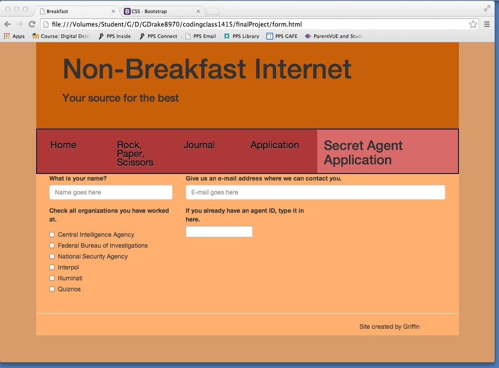

Today, the topics of study were variables, strings, spacing, and numbers in the context of JavaScript.
My grade is fine, but I still need to finish styling my journal page for next time. Other than that, I'm on top of my stuff!
Today, we studied how to best define variables and use the forums. I posted and then answered my own question about how variables pull and the order in which that happens. Fun!
My grade's good to go, and I'm all caught up on all the Moodle assignments. Just waiting for next week!
Today, we learned how to assemble an array, which is a variable that can hold multiple values, and how to call each of those individual values using call numbers. Arrays hold each value between brackets, and the strings, functions, booleans, integers and other data types are separated by commas. Calling a specific value requires calling the variable, immediately followed by two brackets with a number corresponding to its position, with the first value having zero as that number.
I am completely caught up. Ready to rock 'n' roll.
Today, we practiced with using prompts, alerts, and arrays to ask questions and then tell users what their favorite foods are! As part of the extension I made the questioning mechanism into a function, then made that function run when a button was clicked on the page. I also found that it was important to have body elements written out before calling them in a function. Next time, I might work to streamline the writing-out process with a for loop or two.
I continue to be good to go. All right!
Today, we learned several methods (pop, push, shift, and unshift) to move elements inside an array around. This type of array management is essential to creating complex programs that contain a lot of data. The way I did this was by simply defining a "teacher" array in the console, and then seeing the effects of each function being performed on the array. We also practised using for loops to write out repetitive tasks like cat names, but I was unable to finish the screen cast. FUN STUFF FOR NEXT TIME!
Despite being sick, I caught up, and I am now completely up to speed. Aw yeah.
For today's class, we went absolutely in depth on the for loop, breaking down every component and having it prompt the user several times, writing several items to the page at different times. Now that's AJAX, assuming I understand it correctly. We also learned the syntax for a while loop, which continues to run a script until the "true" condition inside its parentheses becomes a "false" condition. It is less compact than the for loop, but it can also be turned on or off by the changing of outside variables, and in that it has great versatility. I hope to use them in the future.
I haven't logged in to Moodle today, and Studentvue has been down, so I couldn't really tell you if I'm caught up or getting good grades. That's something for the weekend, I suppose.
Today was a very short class. We began to use for and while loops to construct a project. I began styling a page for a text-based adventure game. I am up to date and working hard on the game!
Today was a productive session of coding my game. It involves two arrays. One is continually refreshed, and that contains all of the information for the hero and all of the things that are going on. The other array keeps track of the hero's items. I am using several functions to automate movement of data through the arrays. I plan to use a counter variable to create several switch functions that can evaluate the hero's actions as they progress through several different scenes. The standard text-based actions (LOOK, TAKE, GO, SPEAK) will all have their own listener buttons. THINGS ARE GOOD!
I successfully navigated today's NOTEBOOK CHECK! I also improved my game significantly, adding support for the inventory, using a for loop to print out the output without those nasty array commas, and updating pictures based on your occupation (or class in DND terms). Things are going well, but I'd like to find a better way to have the output tick slowly out instead of all at once. I added a "wait" function that makes each chunk delayed, but line by line still eludes me. Improvements for next time! I should also add a better color scheme for the output and inventory.
I added a while loop, a couple four loops, and worked on making the "restart" function actually work. Now, when you click restart, it clears out the output, inventory, resets your character's picture, and runs the start of the adventure again. In order to avoid repetition, I have the initial inventory update split into two functions, one that lets users choose their occupation through their weapon and one that gives them a few starting items.
Writing my journal entry at the start of the period so that I don't forget it. I'll be attempting to add a cool color scheme to the inventory and output, making the initial functions that make the prompt buttons function, and if I have the time, starting on setting the stage for the first scene. THAT'S ALL!
My game progresses well! The look function is completely working, and I have completed the tasks that I needed to last time. I am now working on a method for users to look at what items are in their inventory, and updated room evaluations. I also hope to work on better managing inventory space, and maybe adding a drop button. I also want to have a "tick through" type of text, but that is still out of reach. At least the item arrays are working. I cannot see any better method than many branching switch statements, as repetitive as that will be.
I worked on my project over break to create say support. Now, I want to work on the bootstrap project, applying that to restyling and redesigning my game as it exists now. I think this redesign should happen sooner rather than later -- I want to avoid coding more just to have to re-write it. I was also given a suggestion that the game should work using objects rather than functions. I don't know what that entails, so research is in the future.
I am working on building a basic Rock, Paper, Scissors game. I think I'll use this program, once it's finished, as a tool for learning bootstrap. That will make it easier to learn, and I can practice and make mistakes without tearing apart the adventure game. I'll install bootstrap after I finish the javascript.
I unsuccessfully applied to PCC today to try and get that sweet sweet dual credit and free PCC software and e-mail addresses and other goodies. But honestly? I'm not bitter. Things are going to be OK. I worked on getting the RPS up to speed, learned that you can't put a function containing a parameter in event listeners, and all I have left before I dive headfirst into boo'strap and jQuizzle.
I downloaded and link up the bootstrap files to my now finished RPS project. Next time: an exploration of the styling tools that are available with bootstrap. Let's just align the divs first.
Aligning the divs has become harder than I expected. The grid system of bootstrap is a little confusing in that it requires several different layers of divs even for just a simple column. You can use the "col" series on their own, but the styling isn't designed for it. I tried to use a ro without a container, and it pushed the edges of my divs off of the page. I have a basic idea of how the grids are going to work, though, so that's a plus. The meta tag, which is used for responsiveness, was put IN PLACE. Next time: I have to figure out how to make all elements in a row-fluid the same height. So that they look nice.
Got some divs aligned. Fixed some heights in a non-dynamic way. I want to style buttons next. Short entry today.
I worked on changing the rock-paper-scissors buttons into images, and struggled on placing them into bootstrap.
I learned how to snag the basic template of boo'strap from the boo'strap website, and also how to use the "column offset" tools to push those divs around. I also learned that a horizontal line can be used to separate row-fluids, which is something I will probably use in r-p-s.
463 Photographs by Chris Niedenthal A website that showcases the talents of photographer chris niedenthal and allows you to buy prints. I liked the minimalist design and sleek presentation of the images, including the little line animations, but I thought some of them could have used a little more written content (captions).
Cyber Agent by NIGO Promotional website for a new logo creation company between two well-known Japanese designers. The page flows really well when viewed for the first time, presenting their content in an interview format and including videos and sleek color schemes, but it's hard to navigate back up to the rest of the page. Repeated readability is hurt by that, and by the fact that it's in Japanese.
Lounge Lizard A sleek website for a design company. It has responsive design that reacts well to mobile, a cool 1950s theme, and big bright fonts. It's very hard to find something I don't like with the lounge lizard website.
The best websites I saw all had large, loud pictures, big fonts, bright color schemes, introduction pages, a vertical heavy design (one that favored scrolling) and picture overlays that appeared when a mouse hovered over them. Pictures, fonts, and colors I can handle, but for the rest of those things, I need to see what responsive bootstrap styles have to offer.
I am stuck in a quandry. Organizing the bootstrap divs of my RPS project is seriously frustrating. I think it would all work out if the rows established their height as the height of their largest daughter element. I am going to research a method for getting that done next time.
I fixed my dang thing!!!! Turns out, using row-fluid-fluid and container-fluid are pretty much tools of the devil to the uninitiated. So, I fixed that, and now I can effectively shift my site around to look nice. I'm working on stylin' the results and the "FB like" picture (maybe change # of pics with size???) and then it'll be ready for production!
The web journal is cracked wide open, and I'm tooling around with its guts, trying to get my bootstrap working propertly. This is more of a challenge than the rps project because there's more fiddly bits of content to mess with. And that nav bar. I'm not sure what style is even for,really.
I found the form. I found it. I'm starting on fixing it.
Today was a nice day off. I did the rest of the PHP track in codecademy, which talked about objects and associative arrays. After that, it was just messing around with learning some form code again.
I begin the final project. Right now, I need to finish the webjournal styling. It's responsive and functional, but it looks like garbage. These bootstrap styles will be applied to my new homepage, and I'll add the "about me" to that. After that I'll apply my stylin' techniques to polishing up the rock paper scissors game for real finally this time! Then I need to understand forms and make a secret agent application form. This is the exact plan I will follow.
My webjournals are harder to write because of all the in-html styling that needs to occur. I made my webjournal modern, and fixed up the index. I then transferred all the files to a single folder called "final project" which I am working with to re-style all of the RPS project. I just remembered that I need to support the formFun part of the final as well, so that will need some SLIGHT navbar realignment, but it's easier to make everything in this final folder than make them all separately and try to pull them together.
HEY! Restyled the navbar to be a little bit nicer. I think my site just looks better overall on mobile, so. Styled the Rock Paper Scissors game so that it is good and pretty and good. Next time: FORM FUN.
Things that I need to accomplish, listed.
This is a lot of things. Oh dear.
I started working on the form things. I should take a screenshot of my site for next time and put it in my webjournal!!! That would be super cool. The form is a secret agent application. I have some good design. I am shaky about how modern the navbar is but at this point, it's kind of at the back of my priorities. First things first is getting the form HTML and JavaScript done.
UPDATE:
I added the last of the HTML necessary to make the form run. Except for a slight styling snafu in getting the "bio" text area to be more than one typeable line. My task for next time is to fix that, obviously, and then start working with my form javascript to spin TEXT INTO GOLD or at least a response on the page. At home I'm going to rewrite my bio and do what I can to prep for getting this project done. Seriously, there's a lot of little things still to do...
The form is running! Mostly. I need to add in the last of the outputs for the last 2 pieces of the form. Jack suggested that the form should not print out a "your such and such is..." if there is no value in the object. That should be pretty easy to do with if statements, so I'll do that next time.
Things I must complete update.
Things that would be good to complete: